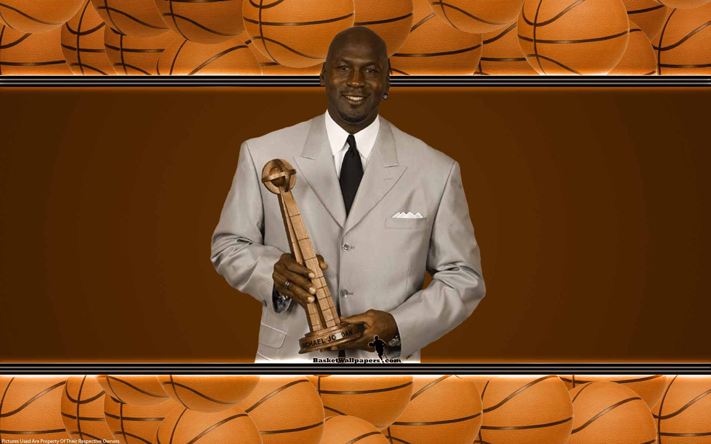
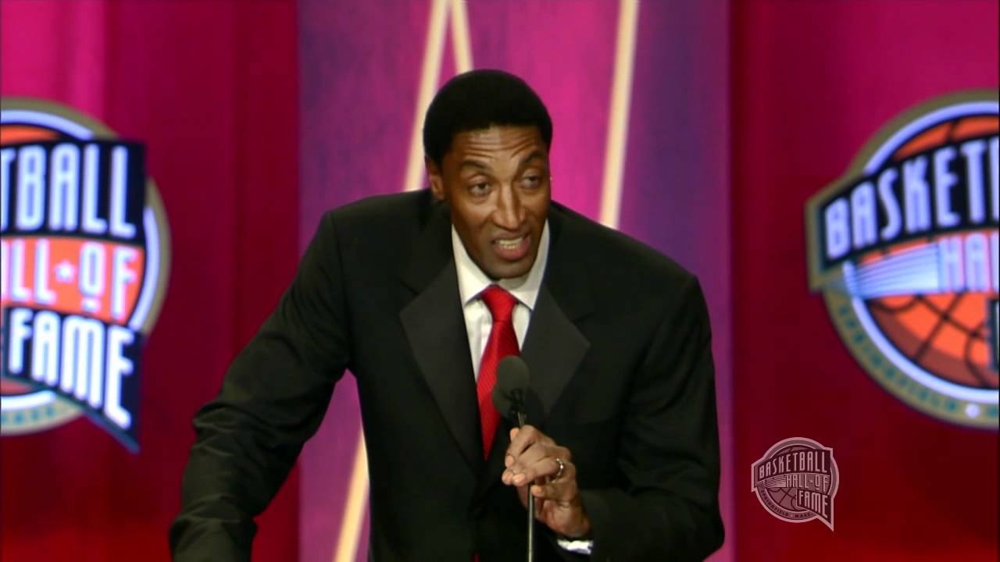
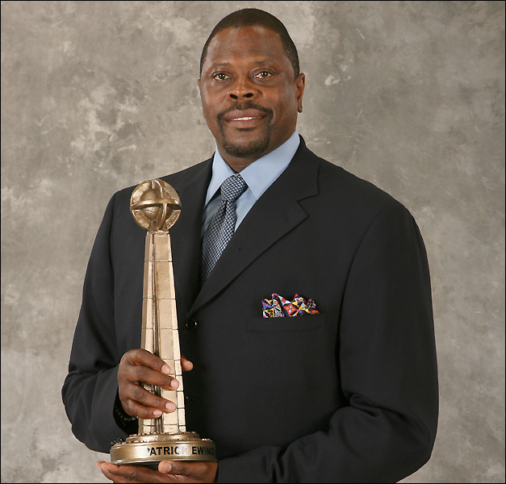
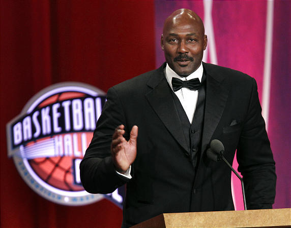
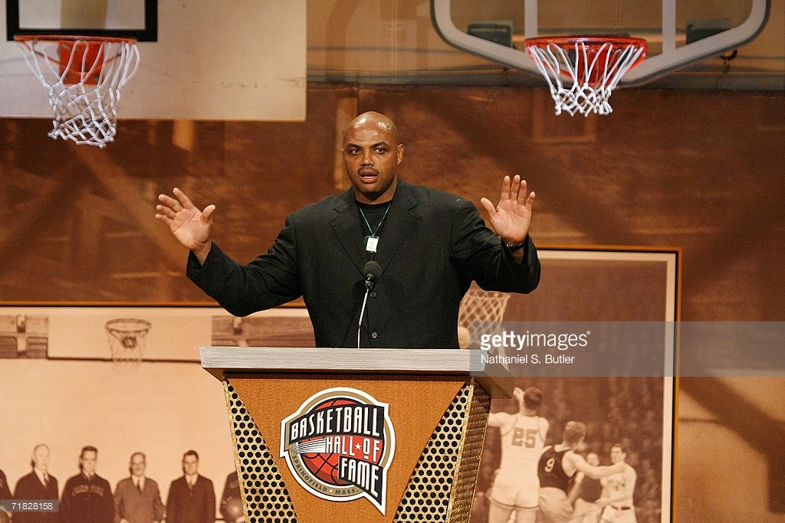
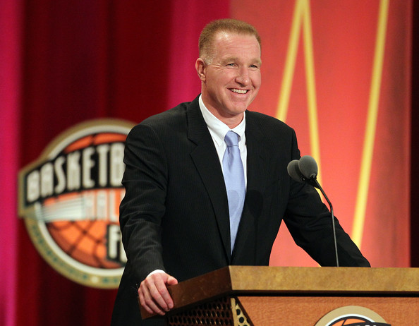
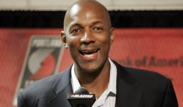
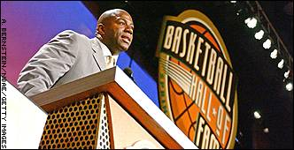
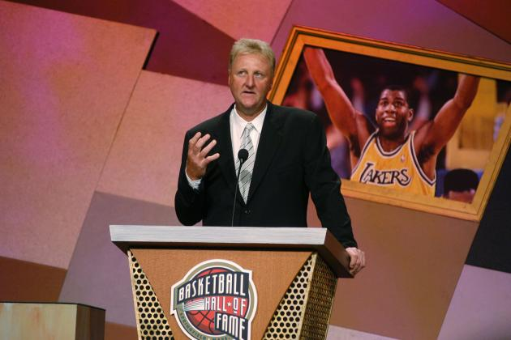

USA Dream Team
1992 Olympic
-

Playing career 1984–1993, 1995–1998, 2001–2003
Michael Jeffrey Jordan
Michael Jeffrey Jordan (born February 17, 1963), also known by his initials, MJ, is an American retired professional basketball player
-

Playing career 1987–2008
Scottie Pippen
Scottie Maurice Pippen is an American retired professional basketball player who played in the National Basketball Association. Nicknamed "Pip", he is most remembered for his time with the Chicago Bulls, the team with which he won six NBA titles
-

Playing career 1985–2002
Patrick Aloysius Ewing
Patrick Aloysius Ewing is a Jamaican-American retired Hall of Fame basketball player. He played most of his career with the NBA's New York Knicks as their starting center and played briefly with the Seattle SuperSonics and Orlando Magic.
-

Playing career 1985–2004
Karl Anthony Malone
Karl Anthony Malone is an American retired professional basketball player. Nicknamed "The Mailman", Malone played the power forward position and spent his first 18 seasons in the National Basketbal
-

Playing career 1984–2000
Charles Wade Barkley
Charles Wade Barkley is an American retired professional basketball player and current analyst on the television program Inside the NBA.
-

Playing career 1985–2001
Christopher Paul Mullin
Christopher Paul Mullin is an American retired basketball player and current head coach of the St. John's Red Storm. He previously served as special advisor for the Sacramento Kings and general manager of the Golden State Warriors.
-

Playing career 1983–1998
Clyde Austin "The Glide" Drexler
Clyde Austin "The Glide" Drexler is an American retired professional basketball swingman. During his career, he was a ten-time All-Star, and named one of the 50 Greatest Players in NBA History.
-

Playing career 1979–1991, 1996
Earvin "Magic" Johnson Jr.
Earvin "Magic" Johnson Jr. is an American retired professional basketball player who played point guard for the Los Angeles Lakers of the National Basketball Association for 13 seasons.
-

Playing career 1979–1992
Larry Joe Bird
Larry Joe Bird is an American retired professional basketball player who played for the Boston Celtics of the National Basketball Association.
-

Playing career 1992–2005, 2011–2012
Christian Donald Laettner
Christian Donald Laettner is a retired basketball player whose hall-of-fame career for the Duke Blue Devils is widely regarded as one of the greatest in National Collegiate Athletic Association history.
-
Be Part
Of The History Of
BASKETBALL!